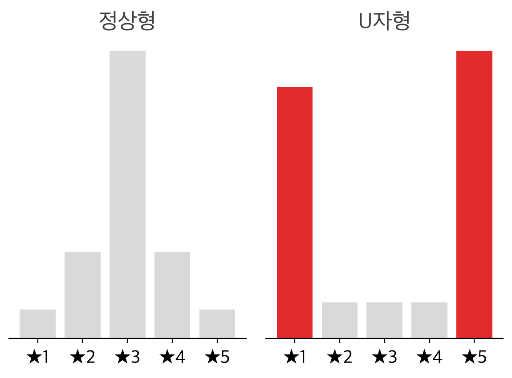
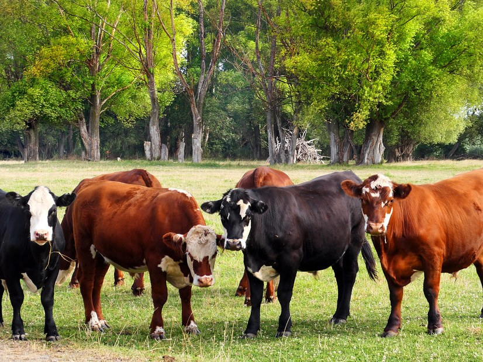
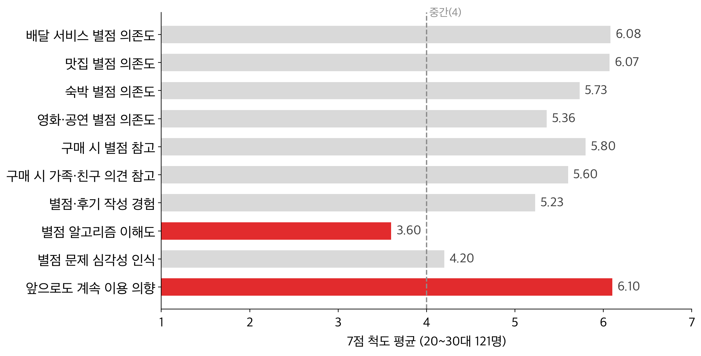

10
데이톨로지 — 데이터로 읽는 인간과 사회
집단지성과
별점의 해법
주교재: 김성태, 『데이톨로지』 2부 · 연재 ④ · 강사 : ○○○

CONTENTS
집단지성과
별점의 해법

학습 목표
목표 1
서로위키의 집단지성 4조건으로 별점 시스템의 실패 설명
목표 2
데이터 수집·분석 단계의 별점 개선안 설계
오늘의 질문
1907년 시골 장터, 787명이 황소 무게를 추측
정확히 맞힌 사람은 0명, 평균은 1,197파운드
실제 무게는?
집단지성의 증거
[비유] 장터의 소 떼

사진: Bernard Spragg / Public Domain Mark
황소 무게 맞히기 = 집단지성
- 1907년 영국 시골 장터, 참가자 787명
- 개인 추정은 제각각, 정확히 맞힌 사람 0명
- 추정값 평균 1,197 vs 실제 1,198파운드
- 제각각의 오차가 서로 상쇄되는 구조
집단지성의 증거
추정이 쌓일수록 평균이 실제 무게에 근접
집단지성의 증거
퀴즈쇼, 개미, 온라인
서로위키 · 2004
퀴즈쇼 찬스
- 전문가 한 명: 정답률 약 65%
- 청중 다수결: 정답률 91%
- 『대중의 지혜』
휠러 · 1910
개미 군집
- 개체는 미미
- 군집은 높은 지능 체계
- 『개미』
피에르 레비
온라인 집단지성
- 어디에나 분포
- 실시간으로 조정
- 역량으로 동원되는 지성
집단지성의 4가지 조건
[비유] 개미 언덕
사진: Klearchos Kapoutsis / CC BY 2.0
개미 언덕 = 집단지성
- 설계도 없이 수많은 개미가 쌓은 구조물
- 각자 주변 정보로 독립적인 판단
- 중앙 지휘자 없는 분산 구조
- 조건이 맞을 때만 작동하는 지혜
집단지성의 4가지 조건
제임스 서로위키, 『대중의 지혜』(2004)
① 다양성·개방성
참가자 범위의 제한 없음
② 독립성
타인·주변의 영향 없는 개인 판단
③ 분산화
중앙집권적이지 않은 의견 조율
④ 통합 체제
다양한 의견을 모으는 기술적·제도적 장치
현실에서 4조건 완벽 충족은 거의 불가 → 보완책 필요
집단지성의 4가지 조건
독립성이 깨지면: 앞사람의 별점을 보고 매기는 별점
집단지성의 4가지 조건
별점에 대입하면
다양성 붕괴
아주 만족했거나 아주 화난 사람 위주의 참여
독립성 붕괴
기존 평균·리뷰를 본 뒤의 평가, 이벤트·별점 거래
별점 = 집단지성이 아닌
하나의 “권력”
- 매출·폐업을 좌우하는 숫자
- “집단감정”·“집단야성”으로 흐를 위험
별점을 대하는 우리의 모습
저자 설문: 20~30대 대학(원)생 121명, 7점 척도

별점을 대하는 우리의 모습
“크게 의존, 계속 사용, 원리는 모름”
의존
6점대
- 배달 6.08
- 맛집 6.07
- 지속 이용 의향 6.1
이해
3.6점
- 별점 알고리즘 이해도
- 척도 중간(4)보다 낮음
결론
리터러시 필요
- 폐지보다 개선
- 문제 최소화 방향
데이톨로지의 6대 제안
[비유] 심사위원 점수표
사진: Rick McCharles / CC BY 2.0
심사위원 점수표 = 별점 보정
- 여러 심사위원의 점수 합산
- 최고·최저 점수 제외 규칙
- 한 명의 극단적 점수로 순위가 뒤집히지 않는 장치
- 별점에도 같은 원리: 아웃라이어 보정
데이톨로지의 6대 제안
별점 테러 3개: 평균 하나 vs 참여자 수·분포·보정
데이톨로지의 6대 제안
데이터 수집·분석 단계의 보완책
최소 참여자 수 기준 충족 시에만 공개
참여자 수 공개 (여론조사의 표본 크기 공개처럼)
같은 업종 안의 상대 랭킹 제공
아웃라이어 보정 (최고·최저 제외)
작성자 정보 시각화 (이용 횟수·과거 리뷰·키워드)
작성 자격 명확화, 별점 거래 금지 등 제도 장치
데이톨로지의 6대 제안
이미 시작된 변화
넷플릭스
5점 별점 → ‘좋아요/별로예요’ + ‘% 일치’
평가 참여율 200% 증가로 평가
네이버 (2021.4.23 발표)
AI로 허위·악의 별점 필터링
별점 대신 키워드 ‘태그 구름’, 영수증 리뷰
미국
소비자 리뷰 공정화 법 (2016)
악의적 리뷰 = 시장 교란 행위
영국
별점·리뷰 모니터링·관리
플랫폼 가이드라인
활동: 별점 시스템 재설계 해커톤
팀별 60분 · 배달 / 강의평가 / 병원 / 숙박 중 하나
STEP 1 · 20분
진단
- 4조건 중 깨진 조건 찾기
- 피해자는 누구인가
STEP 2 · 25분
설계
- 6대 제안 중 3개 이상 반영
- 평가 화면 종이 와이어프레임
STEP 3 · 15분
피치
- 팀당 3분 발표
- 새 부작용도 함께
- 투표는 동시 공개(독립성)
정리 및 확인 문제
오늘의 핵심 4줄
집단지성 = 제각각의 오차가 상쇄되는 군중의 지혜 (갈턴의 황소)
4조건 = 다양성 · 독립성 · 분산화 · 통합
별점 = 조건이 깨진 채 “권력”이 된 숫자
해법 = 폐지가 아닌 보완: 참여자 수 · 분포 · 보정 · 제도
정리 및 확인 문제
확인 문제
문제 1
식당 화면에 기존 평균 별점이 먼저 보인 뒤 내 별점을 매기는 구조에서 깨지는 집단지성 조건
문제 2
별점 5, 5, 5, 5에 별점 테러 1점 하나 추가 시 평균, 그리고 최고·최저 하나씩 뺀 평균
문제 3
6대 제안 중 여론조사의 공개 세칙에서 빌려 온 제안
문제 2: (5+5+5+5+1)/5 = 4.2 → 최고 5·최저 1 제외 (5+5+5)/3 = 5.0
문제 3: ② 참여자 수 공개 (표본 크기·표본오차 공개처럼)
정리 및 확인 문제
마무리
이번 주 과제
- 연재 ⑦ 「AI 알고리즘의 딜레마」 읽기 + 사전 질문 1개
- 유튜브(또는 인스타) 첫 화면 캡처 준비
- 데이톨로지 저널: 우리 학교 강의평가는 4조건을 충족하는가
다음 시간
알고리즘 큐레이션의 양면성 — 선택의 역설 vs 필터버블
이미지 출처
사진 (Openverse 검색, CC 라이선스·퍼블릭 도메인)